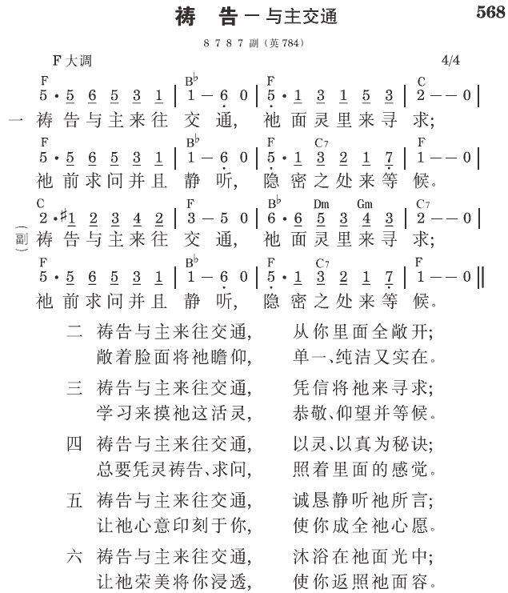

西4:2 你们要坚定持续地祷告，在此儆醒感恩。
弗6:18 时时在灵里祷告，并尽力坚持，在这事上儆醒，且为众圣徒祈求。
祷告的意义
真实地祷告，就是神人二者互相的接触。祷告不光是人来接触神，也是神来接触人。任何一个祷告，若没有人碰着神和神接触，也没有神碰着人和人接触，这一个祷告就不是一个构得上水准的祷告 （《祷告》一一页）。
坚定持续地祷告
保罗在歌罗西四章二节嘱咐我们，要坚定持续地祷告。这意思是说，我们不仅该持续祷告，更该奋力的持续祷告。在我们的环境中，几乎每件事都与祷告相对。我们要祷告，就必须反我们环境中的潮流。如果我们不祷告，我们就会随波逐流。唯有祷告能使我们反潮流。因此，我们需要坚定持续地祷告。
为祷告生活与主办交涉
在你想要坚定持续地祷告以前，首先该为你的祷告生活和主办交涉，要确定的向主祷告说，“主，在祷告的事上，我向你是认真的。我呼天唤地作见证，从现在开始，我要有祷告的生活。我不要作一个不祷告的人，我要作一个祷告的人。”我们要对祂说，“主，我在这事上很迫切。我把自己献给你，好叫我有祷告的生活。主，保守我在祷告的灵里。如果我忘记了，忽略了，我知道你不会忘记。求你一再提醒我要祷告。”这样的祷告可以当作向主所许的愿。我们都必须为着我们的祷告生活向主许愿。我们应当告诉主：“主，我知道如果我忘了所许的愿，你不会忘记。主，从一开始我就要清清楚楚的把责任交给你。主，不要让我过去，要提醒我祷告。”
每日划出确定的时间祷告
我们为祷告和主办了这样的交涉以后，就该划出定时祷告的时间。比方说，你可以每天早晨留下十分钟。在这段时间里面，最重要的事必须是祷告。我们的态度应当把祷告当作我们最重要的事，不让别的事情打岔。如果我们没有这种态度，我们的祷告生活就无法成功。不论我们每天必须作多少事，我们至少能在某些时段留下几分钟来祷告。早晨我们可以有一些祷告，然后中午、下班后、以及晚间可以再有些时间祷告。我们在一天之内划出确定的时间，就能留下半个钟头来祷告了（《歌罗西书生命读经》三一三、七二〇至七二一页）。
参读：《祷告》第一篇；《歌罗西书生命读经》第三十、六十五篇。
